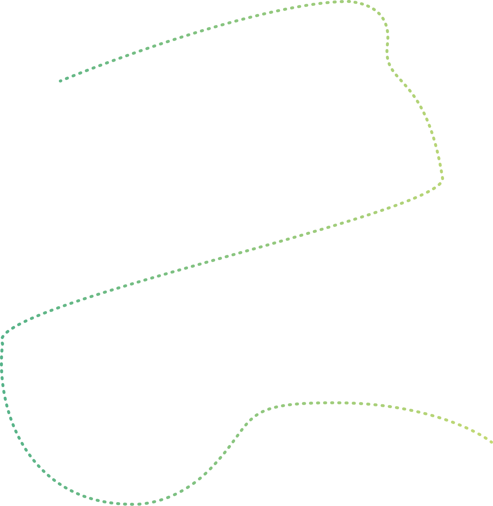
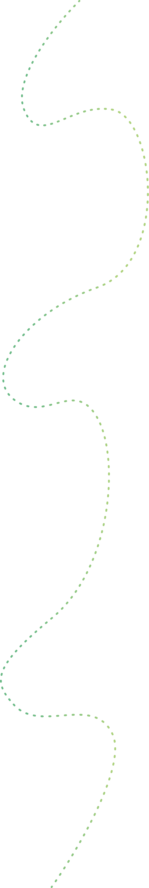
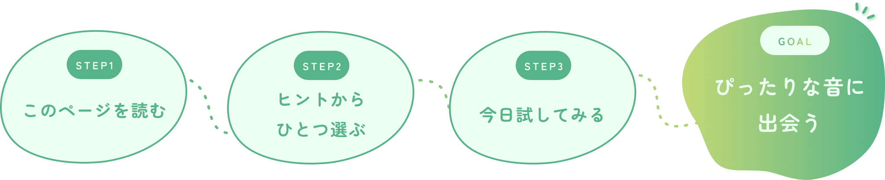
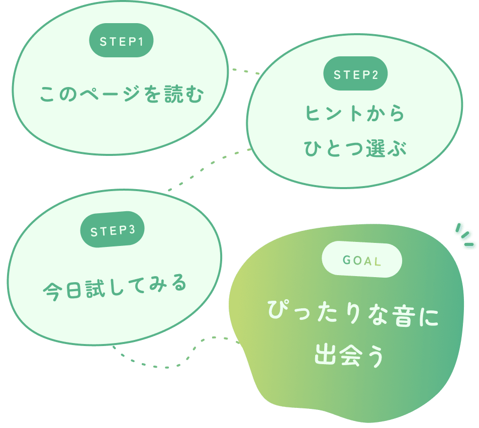

少しだけイヤホンを外す
通勤・通学中、片耳だけ外してみる。これだけで、街の音や風の音がぐっと近く感じられます。「無音にする勇気」がいらないのが、いちばんはじめの一歩。
少しだけ、耳の使い方を変えてみる。 特別な道具も場所も要りません。手軽な順に4つ、並べました。


通勤・通学中、片耳だけ外してみる。これだけで、街の音や風の音がぐっと近く感じられます。「無音にする勇気」がいらないのが、いちばんはじめの一歩。
ベンチや窓辺で、1分だけ目を閉じてみる。視覚が休まると、音の遠近や方向が不思議なほどはっきりしてきます。「どこから？」と問いかけるだけで、世界が立体になります。
雨や風の日こそ、普段は聴けない音に出会えるチャンス。窓を数センチだけ開けて、室内の静けさと外の天気が重なる音を楽しんでみて。不便な日が、ちょっと特別な日に変わります。
同じ公園でも、春と秋では聴こえる音がまるで違います。お気に入りの一場所を「定点」に決めて、月をまたいで通ってみる。変化に気づける耳が、ゆっくりと育っていきます。
慣れてきたら。少し長めの3つを。
スマホの録音アプリで、同じ場所の音を1週間ごとに撮ってみる。当日は気づかなかった小さな変化が、聴き比べてはじめて見えてきます。
その日聴こえた音を3行だけ書きとめる。時間と場所だけでも十分。1ヶ月続けると、季節が変わった瞬間が言葉でくっきり浮かびます。
同じ音でも、聞く人によって変わります。「雨だね」「もっと粒が大きい雨だね」人と話すことで、自分の耳にぴったりな音が探れます。
紹介されている音の種類や条件の知識と組み合わせると、 聴くたびの発見が何倍にもなります。
読み終えたら、何かひとつ、やってみる。


ヒントを携えて、実際に音と出会いに行きましょう。